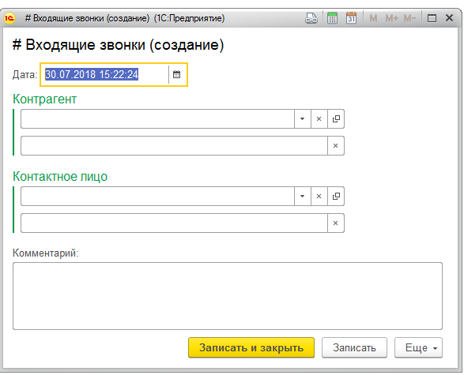
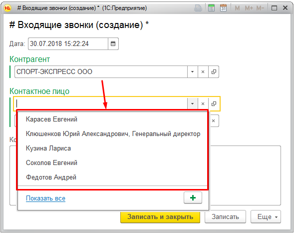
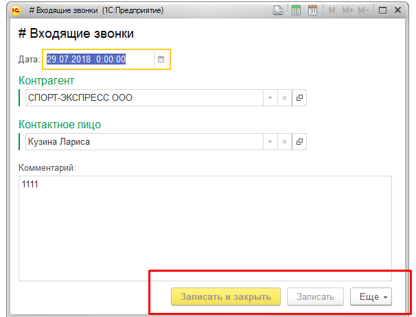

Добавление записи звонка

Заполняются поля контрагент ( выбирается из справочники или вводится вручную)
Если контрагент выбран из справочника, то ручной ввод недоступен)
То же самое для контактного лица.
Контактное лицо выбирается по принадлежности к контрагенту из выпадающего списка:

В поле комментарий записывается чель звонка и краткое содержание пожеланий.
Записи предыдущего дня недоступны для редактирования.
